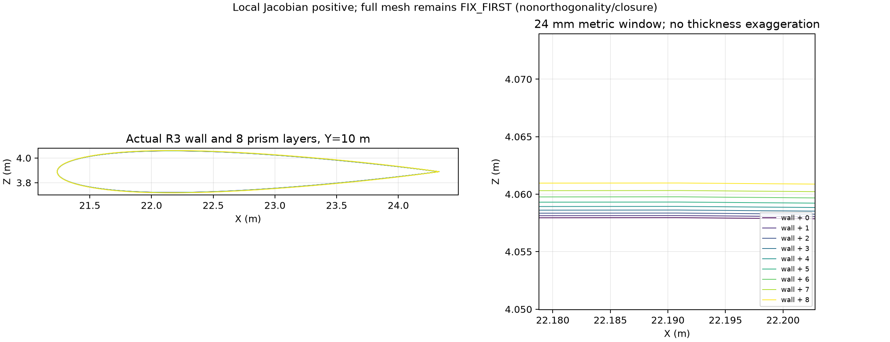
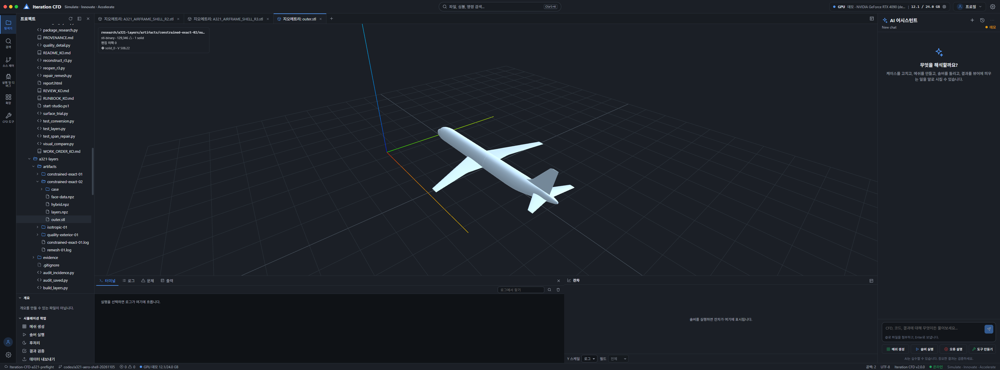

VERDICT: FIX_FIRST / AIRCRAFT_GPU_HOLD. R3 원본을 바꾸지 않고 8층 프리즘을 만들었고, 프리즘 내부 Jacobian 최소값 검사에서 뒤집힘이 검출되지 않았다. 폐합 오차를 크게 줄였지만 비직교·폐합 기준을 모두 통과한 해석용 격자는 아직 만들지 못했다. 항공기 GPU solver는 실행하지 않았다. 이는 연구 진전이며 공력 해석 완료나 A321 성능 검증이 아니다.
| 항목 | 이전 hybrid-r5 | 현재 constrained-exact-02 | 판정 |
|---|---|---|---|
| 벽면 | R3 | 같은 R3 좌표·129,522 삼각형 | 보존 |
| 층 수 | 5 | 8 | 생성 |
| 전체 셀 수 | 861,165 | 1,251,054 | CPU 생성 |
| 프리즘 수 | 647,610 | 1,036,176 | 생성 |
| 외부 사면체 수 | 213,555 | 214,878 | 생성 |
| 뒤집힘 검사 | 이전 6개 위치 검사에서 20개 검출 | 기준 프리즘 전체에 대한 해석적 최소 Jacobian 검사: 비양수 0개 | 검사 강도가 다르므로 단순 비율 비교 금지 |
| 최소 Jacobian | 이전 표본 검사 실패 | 7.104946599020976e-17 m³ | 양수, 작은 여유 |
| 최소 셀 체적 | 1.9410e-17 m³ | 2.6595e-16 m³ | 양수 |
| 최대 비직교각 | 90.8168° | 89.9927° | 70° 초과: 실패 |
| 70° 초과 내부 면 | 374,933 / 1,980,990 | 459,388 / 2,955,051 | 개수 증가; 비율 약 18.93% → 15.55%, 여전히 실패 |
| 최대 상대 폐합 오차, 기존 fan 방식 | 3.341564 | 4.010304e-10 | 크게 개선, 1e-10 초과: 실패 |
| 다른 삼각 분할의 상대 폐합 오차 | 별도 수치 미기록 | 1.527622e-9 | 역시 실패 |
| 첫 층 두께 중앙값 | 0.0139045 mm | 0.190525 mm | 증가, y+ 미측정 |
| 첫 층 두께 최솟값 | 2.3202 nm | 31.7923 nm | 여전히 국소 붕괴에 가까움 |
| 전체 층 두께 중앙값 | 0.125740 mm | 3.143491 mm | 물리적 경계층 포착 여부 미확인 |
| 유체 연결 성분 | 1 | 1 | 연결 검사 통과 |
수치 원장: 이전 ../a321-integration/evidence/polyMesh-quality.json, 현재 생성, 변환 품질, 저장 파일 재검사, 접속·패치 계약. 서로 다른 폐합 계산 결과를 평균내거나 좋은 값만 선택하지 않았다. 이 Windows 환경에서 NumPy longdouble의 mantissa는 52비트여서 더 높은 정밀도 검증으로 볼 수 없다.
비행기 표면에 얇은 이불을 여덟 겹 덮고, 이불 사이를 작은 방들로 나눈다고 생각하면 된다. 이전에는 날개와 동체가 만나는 곳에서 이불을 잘못된 방향으로 밀어 일부 방이 뒤집혔다. 이번에는 연결된 모든 표면을 향해 바깥쪽으로 나가도록 방향을 계산하고, 뒤집히는 곳의 두께를 줄였다.
방 자체가 뒤집히지 않는 것만으로는 계산하기에 충분하지 않다. 이웃 방으로 통하는 문이 지나치게 비스듬하면 공기가 얼마나 넘어가는지 계산하기 어려워진다. 이것이 비직교 문제다. 방을 둘러싼 벽들의 방향·면적 합이 맞는지도 확인해야 한다. 이것이 여기서 측정하는 폐합이다. 화면에서 매끈해 보여도 이 두 검사에 실패하면 해석을 시작하지 않는다.

위 그림은 저장한 각 층의 실제 좌표와 Y=10 m 평면의 교차선이다. 오른쪽은 실제 24 mm 창이며 두께를 과장하지 않았다. 이 국소 그림은 전체 형상의 충돌 없음이나 공력 정확도를 증명하지 않는다.
R3 입력: ../a321-integration/models/A321_AIRFRAME_SHELL_R3.stl.
SHA256: 2c0111c3bafd34b49b506325e52d13045f997aeaced11236f45b744f08abe745.
기준 연구 브랜치: codex/a321-aero-shell-20261105, 이번 작업 시작 HEAD ab176ae27e5368c58900162ef4435e0c0a7957c0. 기존 R3 STL·BLEND와 Aircraft-Workbench 원본에는 쓰지 않았다. R3는 이미 단순화된 airframe이며 엔진·파일런·착륙장치·sharklet을 포함한 OEM 전체 항공기가 아니다.
layers.npz로 내보내지 않고, 소비 단계도 유한·양수 Jacobian을 요구한다.| 후보 | 결과 | 사용 여부 |
|---|---|---|
| isotropic-01 표면 재분할 | 60,216 삼각형, closed/winding/kernel 검사 통과. R3→후보 6,000점 표본 최대 거리 74.3185 mm, p95 2.954 mm | R3 그대로라는 조건에 맞는 후보로 승격하지 않음 |
quality-exterior-01, pq2a100YQ |
입력 순서 보존 검사 실패 | 제외 |
| quality-exterior-02, 같은 옵션 + 정확 좌표 재매핑 | 일부 원래 외곽 좌표가 출력에 정확히 존재하지 않음. 최대 최근접 거리 18.789 µm | 제외 |
quality-exterior-03, pq2a100YMQO/1 |
병합 억제·flip-only 옵션에도 같은 정확 좌표 보존 검사 실패 | 제외 |
18.789 µm는 추적된 동일 정점의 이동량이 아니라 보존되어야 할 입력 좌표와 출력 좌표 집합 사이의 최대 최근접 거리다. 정점 누락·이동의 내부 원인은 확정하지 않았다. 원래 좌표를 임의로 되돌리면 사면체가 뒤집힐 수 있으므로 그렇게 보정하지 않았다. 원시 TetGen 출력은 로컬 artifact에 보존하고 진단에 정확 일치·누락 수를 남겼다. MeshLab의 4 mm 연산 허용치는 전체 형상의 양방향 Hausdorff 보증이 아니다.
http://127.0.0.1:5183/, Ego TaskSpace 6에서 원 R3와 새 outer.stl을 열었다. 외곽 STL은 층의 가장 바깥 껍데기이며 새 항공기 벽면이 아니다.case/system/README_MESH_ONLY.txt는 Studio의 기존 case 분류에 필요한 디렉터리와 설명이다. controlDict·초기장·solver 설정을 만들지 않았고 실행 가능한 CFD case라고 주장하지 않는다.
R3 원본 고정 [완료]
→ 8층 생성 + 국소 비뒤집힘 검사 [완료]
→ polyMesh·접합·저장 계약 [완료]
→ 비직교/폐합 + 유효 두께 + 전역 충돌 [FIX_FIRST / 일부 미측정]
→ solver 자체 CPU mesh gate [미실행]
→ RTX 4080 SUPER VRAM/짧은 GPU solver 시험 [금지 상태 유지]
→ 반복수렴·질량보존·격자수렴·실험비교 [장래 단계]
RTX 4080 SUPER 사용 가능성은 메모리가 비었다는 사실만으로 확정되지 않는다. 현재 mesh는 계산 준비 불합격이다. 이전 VRAM 진단과 이번 mesh 준비를 분리하고, 합격 후 실제 binary/SM89 빌드·메모리 측정·짧은 수렴 시험을 새로 남겨야 한다.
NASA NPARC CFD Verification & Validation Tutorial은 CFD 과정·오차·verification/validation·반복 및 격자 수렴을 구분한다. 2026-11-06 현재 페이지를 다시 읽었고 페이지의 최종 갱신 표시는 2021-02-10이다. 여기 사용한 70°/1e-10 수치는 NASA가 이 모델을 합격시킨 기준이 아니라 이 프로젝트에서 유지한 gate다. 생성·표시 성공 → 격자 합격 → solver verification → 실제 공력 validation을 각각 구분한다.
TetGen 1.5 공식 옵션 설명은 Y, M 및 최적화 제어를 설명한다. Y 옵션 설명도 경계 고정 시 품질 개선이 제한될 수 있음을 설명한다. 옵션 문서의 기능은 실제 실행의 좌표 보존·격자 품질 측정과 별개로 취급했다.
재현 명령과 로컬 산출물 보관 범위는 RUNBOOK_KO.md, 입력·출력 해시는 artifact-manifest.json, 검토는 REVIEW_KO.md를 참고한다.